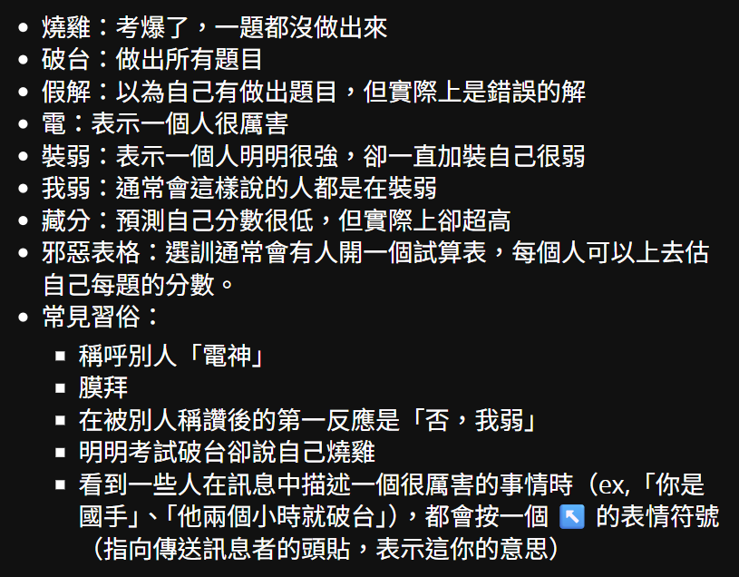
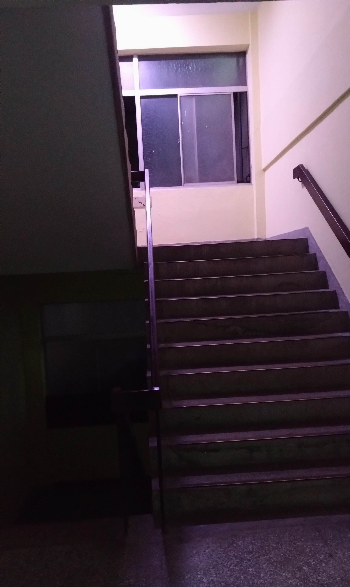
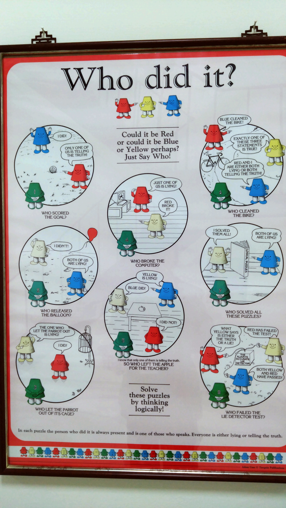

2026 APMOC 心得
為什麼時隔那麼久突然想回來寫APMOC的心得呢？其實我每次參與活動都會想記錄下來，但常常都很懶然後日記就根本沒寫或寫一半，所以就藉著最近剛建Blog想發點東西時順便把它紀錄下來~
初選第一階段
這件事要從我高三報名數奧初選第一階段開始說起，這是我第二次報名數奧初選，考場在建中。在那之前，我已多次前往建中，幾乎每次都是去考試：考科學班、數奧初選、物奧初選、物奧研討、物奧複選，所以對交通應已不陌生。中正紀念堂二號出口出來轉個彎，從南門市場開始一路直走，途經許多店家，再行過一天橋，不用多久便抵達。我國中(有印象以來)第一次抵達建中便感受到一股不凡的氣場，那是一種和建中制服卡其色相似的典雅，令人為之一顫。
下了捷運，循著熟悉的路卻見整修中的二號出口——此路不通，而我是唯一一個發楞的人。時間在手腕上的錶中跳動，我能繼續等待嗎？突然，一個熟悉的身影呼嘯而過，我追趕而上。他是我們班的數學大佬——鼎鼎大名的呂博士。於是我跟隨他自一旁的出口脫困(即使那條其實是遠路)，在我完全陌生的街道奔跑著。
倒數計時，奔跑化為衝刺，最終如兩支標槍射入數學的殿堂。鐘響，時間剛好。
在喘氣和汗流之下寫數學，是名副其實的「酣暢淋漓」，筆尖同呼吸起伏，引領思緒跳動。第一題是課內排列組合，細心些便能拿到。第三題求最大值，我想起專題研究課教的算幾不等式，其中有待定係數的技巧，在與科西不等式搭配使用，最終求出了答案。至此心跳大概也已緩和。剩下的題目便沒那麼順利了，印象中是第二題我觀察了好一陣子，才發現其實考點很簡單。非選一考了離散的證明，我絞盡腦汁地胡言亂語，結合了數學歸納法與歸謬證法(我隨後和同學戲稱此為數學歸謬法)，竟出乎意料拿滿了7分。就這樣，28分，PR97.5，進入第二階段。
11/28/2025
The bell rang, marking the end of a school day. I lazily reached for my phone and saw an email notification pop up on the screen. I opened it without hesitation. It was a message from the Office of Taiwan Mathematical Olympiad, informing me that I had passed the first stage of the competition. Attached to the email were several collections of lecture notes on different topics, including algebra, geometry, number theory, and discrete mathematics. These materials were especially fascinating to me, a math enthusiast.Frankly speaking, I hadn’t expected to pass the test. Similar to last year, I hadn’t done much practice, and my mindset was simple: participate with no pressure and have fun. I scored 28 out of 49, one more correct answer than last year. To my surprise, my performance was already in the top 3% of all the participants.
Gazing at the screen, a sense of satisfaction began to well up inside me. I knew that luck played a significant role in my success, but still, the experience was truly unforgettable.
喔，因為是高三，我那時在練英文作文
初選第二階段
初選第二階段為五題非選題，考4個小時，橫跨中午，因此有附餐盒(耶 免費午餐)。今年的題目出奇簡單，第一題甚至是高一課內基本題(但就是證明要寫嚴謹)，但不知道為什麼附中只有我考過，我甚至是裸考的ㄟ(沒關係，我的其他同學有學校推薦資格，啊呂博士是忘記來考)。我最終以總分27，PR89.9錄取APMOC。
我有提早交卷，因為我會寫的都寫完了
APMOC
前一天
在APMOC的前一天，我在IG上認識了一個成功數資的學弟，看頭貼照片以貌取人一下感覺有些好感(I mean, 不是你們想的那個好感，不要誤會)，應該是個不錯的人，並從他的限動得知他也會去APMOC(學校推薦名額)。稍微聊一下覺得挺開心(畢竟我本來就很樂於認識新朋友)，於是，對於明日的APMOC又多了一層期待。
第一天
活動第一天，我早上先和呂博士以及其他朋友前往科教館，為TISF布展，隨後一起去吃午餐，但他們選的那間餐廳太貴了我又不吃那些東西，於是我就在便利商店買了一個椒麻雞麵蹲在路邊吃(不知經過的路人作何感想XD)
13:14 (嗯？)時，學弟傳給我說他到了，我說太早了吧(14:00才開始報到)，他回
對不起啦 我坐在學校最靠近門口的小七 但我看有幾個人到了（？
然後 I’m like, 你幹嘛對不起啦……這學弟怎麼這麼可愛啦啊啊啊 o((>ω< ))o
見面之後我們交流了一下數學科展、競賽培訓，還有我說好跟他講的初選第二階段第五題的解法(ㄟ他聲音滿好聽的，就是……有點軟綿綿的那種感覺(???))
題外，那題第五題，我們學校另一位數學電神看過題目馬上就抓出題目的Bug然後打了一個非預期解XD
第一堂課是幾何，講位似。這堂課最大的收穫是我終於搞懂九點圓了！！！之前高一數專有教過，但我那時後在打瞌睡w。
晚餐之後是前國手分享，講一些數奧相關的經驗、文化。比如下面這個

20:00開始搭遊覽車前往師大會館 aka 規格好一點但還是很爛的宿舍。我和呂博士與另一個麗山的人同房，那個麗山的同學是打程式競賽的，他有寫一個有趣的小遊戲(那好像是他專題做的東西？忘了XD)。這天晚上有什麼有趣的事情發生呢？
- 呂博士帶了選修生物，但他根本沒有要考
- 就，討論學校課程之類的啊
- 玩遊戲(要動腦那種，像他寫的那個遊戲)
- 台灣的地震警報是最可怕的警報聲響
爆破鎖碼頻道的密碼(沒爆出來)
第二天
我第二天坐在跟昨天一樣的位子。不過學弟跑去坐別的地方了w我的同學則完全坐在另一側。
組合課教鴿籠原理，很多題目在校內培訓都看過，就當複習。接著是一門休閒課程，叫「數學與AI」，我想說這我熟啊，畢竟AI可是我科展的研究器材之一(還是說其實是共同作者)，其實我現在已經忘記他在講什麼了。
下午數論課講貝爾川假定、柴比雪夫定理。像這種比較偏大學代數數論的東西我就比較喜歡XD其實我一直感覺很神奇，居然能用一些分析學的手段來研究離散的整數，像質數定理這種結論我就覺得很不可思議。緊接著是函數方程的課，但因為我太菜了聽得很吃力，感覺很累。
吃完晚餐(印象中是這天吃披薩？)又是國手分享時間，回答Slido上面的問題，感覺有時出現了一些我聽不懂的應該是IMOC的內梗。
今日的番外是我去廁所的路上看到某個樓梯的燈居然是紫色的，那個地方又很閾限，就把它拍下來了(然後大修圖)

晚上我在遊覽車上和呂博士討論科展的東西，畢竟我們的習性就是賽前才在那邊抱佛腳。
啊不是，我發現我忘記我們這天晚上討論什麼了
總之我記得是有研究出新東西、找到一些新解釋
到會館後不久我跑去709房串房，也就是學弟的那一房。(也是聊得很開心)
然後居然有人曾經是林○家的學生XD
九點多回到616開始挑燈夜戰練科展，搞到非常晚。
第三天
第三天就是累累的起床趕快弄一弄，9:30開始考TMO，當日早餐是麥當勞。
考試前我在走廊上看到了這個

考試因為我也不會寫所以提早交卷了w跑到中庭練科展報告XD還有等學弟出來拍個照。
btw 我沒問他能不能放這照片所以我把他碼掉了😎😈
接著就是趕去科教館啦啊啊啊啊，去被教授電。
笑死，前面寫得好像國文很好，結果後面放飛自我隨興寫